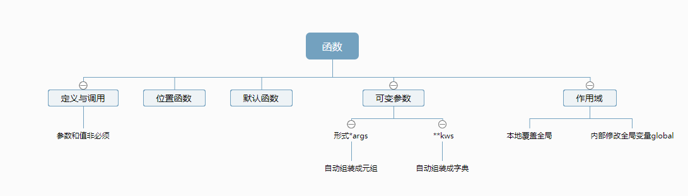

学习python到了函数这一块进度有所放缓，主要还是想理解透彻，毕竟直觉告诉我函数是python是其中的关键，不管是模块、还是包、或者是库，都是建立在若干个函数定义上面。
章节后面就是关于面向对象编程，属于设计理念原理的内容。说一下个人目前的理解（后面会修正），面向对象很容易理解，具体指的就是python中具体的数值、函数、字符串等等，那对象的基本属性就是“属性+方法”，白话讲就是要有数据和代码。对象就是程序的基本单元，也是构成基础。
至于说类，目前个人理解还有点浅薄，个人认为类有点相似自定义模块，通过class定义类别，而通过def 或者def __init__（）语句进行编程设计。最终形成的结果就是可以通过from import来进行导入或使用。但是感觉理解还有点浅薄，后面学习过程中在进行深化。